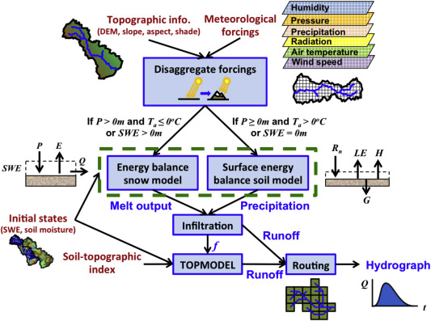

Chapter 4 Model Classification and Application
4.1 Classifying model structure
4.1.1 Learning Module 6
Throughout the rest of the course, we will gather data and create models to explore how measurable environmental factors, such as snow melt, land cover, and topography, impact runoff. To discuss these methods, we should review some modeling terminology describing model complexity and type.
Environmental models, including hydrological models, are built around simplifying assumptions of natural systems. The complexity of the model may depend on its application. Effective hydrological models share key traits: they are simple, parsimonious, and robust across various watersheds. In other words, they are easy to understand and streamlined and consistently perform well across different basins or even geographical areas. Therefore, more complex is only sometimes better.
4.1.1.1 Spatial Complexity
There are general terms that classify the spatial complexity of hydrological models:
A lumped system is one in which the dependent variables of interest are a function of time alone, and the study basin is spatially ‘lumped’ or assumed to be spatially homogeneous across the basin. So far in this course, we have focused mainly on lumped models. You may remember the figure below from the transfer functions module. It represents the lumped watershed as a bucket with a single input, outlet output, and storage volume for each timestep.

A distributed system is one in which all dependent variables are functions of time and one or more spatial variables. Modeling a distributed system means partitioning our basins into raster cells (grids) and assigning inputs, outputs, and the spatial variables that affect inputs and outputs across these cells. We then calculate the processes at the cell level and route them downstream. These models allow us to represent the spatial complexity of physically based processes. They can simulate or forecast parameters other than streamflow, such as soil moisture, evapotranspiration, and groundwater recharge.
A semi-distributed system is an intermediate approach that combines elements of both lumped and distributed systems. Certain variables may be spatially distributed, while others are treated as lumped. Alternatively, we can divide the watershed into sub-basins and treat each sub-basin as a lumped basin. Outputs from each sub-basin are then linked together and routed downstream. Semi-distribution allows for a more nuanced representation of the basin’s characteristics, acknowledging spatial variability where needed while maintaining some simplifications for computation efficiency.

In small-scale studies, we can design a model structure that fits the specific situation well. However, when we are dealing with larger areas, model design may be challenging. Our data might differ across regions with variable climate and landscape features. Sometimes, it is best to use a complex model to capture all the different processes happening over a big area. However, it could be better to stick with a simpler model because we might have limited data or the number of calculations is very computationally expensive. It is up to the modeler to determine the simplest model that meets the desired application.
For this determination, it is important to understand the advantages of different modeling approaches.
4.1.1.2 Modeling Approaches
Empirical Models are based on empirical analysis of observed inputs (e.g., rainfall) or outputs (ET, discharge). These are most useful if you have extensive historical data so models can capture trends effectively. For example, if your goal is to predict the amount of dissolved organic carbon (DOC) transported out of a certain watershed, an empirical model will likely suffice. However, simple models may not be transferable to other watersheds. Also, they may not reveal much about the physical processes influencing runoff. Therefore, these types of models may not be valid after the study area experiences land use or climate change.
Conceptual Models describe processes with simple mathematical equations. For example, we might use a simple linear equation to interpolate precipitation inputs over a watershed with a high elevation gradient using precipitation measurements from two points (high and low). This represents the basic relationship between precipitation and elevation, but does not capture all features that affect precipitation patterns (e.g. aspect, prevailing winds). The combined impact of these factors is probably negligible compared to the substantial amount of data required to accurately model them, so a conceptual model is sufficient. These can models can be especially useful when we have limited data, but theoretical knowledge to help ‘fill in the blanks’.
Physically Based Models These models offer deep insights into the processes governing runoff generation by relying on fundamental physical equations like mass conservation. However, they come with drawbacks. Their implementation often demands complex numerical solving methods and a significant volume of input data. For example, if we want to understand how DOC transport changes in a watershed after a wildfire, we would want to understand many physical system properties pre- and post-fire like soil infiltration rates, quantification of forest canopy, stream flow data, carbon export, etc.. Without empirical data to validate these techniques, there is a risk of introducing substantial uncertainty into our models, reducing their reliability and effectiveness.
An example of a spatial distributed and physically based watershed model from Huning and Marguilis, 2015:

When modeling watersheds, we often use a mix of empirical, conceptual, and physically based models. The choice of model type depends on factors like the data we have, the time or computing resources we can allocate, and how we plan to use the model.
These categorizations provide a philosophical foundation of how we understand and simulate systems. However we can also consider classifications that focus on the quantitative tools and techniques we use to implement these approaches. Consider that we have already applied each of these tools:
Probability Models Many environmental processes can be thought of or modeled as stochastic, meaning a variable may take on any value within a specified range or set of values with a certain probability. Probability can be thought of in terms of the relative frequency of an event. We utilized probability models in the return intervals module where we observed precipitation data, and used that data to develop probability distributions to estimate likely outcomes for runoff. Probability models allow us to quantify risk and variability in systems.
Regression Models Often we are interested in modeling processes with limited data, or processes that aren’t well understood. Regression assumes that there is a relationship between dependent and independent variables (you may also see modelers call these explanatory and response variables). We utilized regression methods in the hydrograph separation module to consider process-based mechanisms that differed among watersheds.
Simulation Models Simulation models can simulate time series of hydrologic variables (as in the following snow melt module), or they can simulate characteristics of the modeled system, as we saw in the Monte Carlo module. These types of models are based on an assumption of what the significant variables are, an understanding of the important processes are, and/or a derivation of these physical processes from first principles (mass, energy balance).
4.1.1.3 A priori model selection:
By understanding the different frameworks of environmental modeling, we can choose the right tools for the right context, depending on our data, goals and resources. In reality, the final model selection is a fluid process requiring multiple iterations at each step. In Keith Beven’s Rainfall-Runoff Modelling Primer, they illustrate the process as:

While we aim to give some hands on experience across multiple model types, there is a wide range of possible models! Why would the most complex model, or one that represents the most elements in a system be best? Why even consider a simple bucket model?
Many modelers have observed that the number of parameters required to describe a key behavior in a watershed is often quite low, meaning increasing the number of parameters does not result in a significantly improved model. This idea that simple models are often sufficient for representing a system have led to the investigation of parsimonious model structures (less complex). Consider though, that the model must sufficiently represent processes or it will be too unreliable outside of the range of conditions on which it was calibrated.
Now that we have reviewed some concepts, our next step will be to develop a term project question. As you brainstorm and gather data, be sure to consider and use the modeling concepts and terminology we’ve covered to frame and structure your project design.
4.2 Term Project Assignment 1 - 10 pnts
As part of the Professional Masters’ Program, you are required to develop a professional paper. It is intended to give you an in-depth experience in the design, implementation, and completion of an original project. The paper will also be a way to showcase your research interests and accomplishments to potential employers or admissions committees. (See LRES 575 for more).
Your term project for this class is not meant to encompass your entire thesis or dissertation. Instead, it should focus on a single, well-defined component that contributes to your broader research. This could be an in-depth exploration of a specific feature of your research question or a clear demonstration of a cause-effect relationship within your work. Next week, you will design a repeatable workflow that is executable within the scope of this semester, and at the end of the term, you will present a concise (~8-minute) synopsis of your question and workflow.
This assignment is focused on data retrieval; you will develop the main goal and objectives of your term project and explore, evaluate, and select data sources. A key component of this process is formulating a research question that clearly defines both an explanatory variable and a response variable; one is not sufficient without the other. The workflow for this assignment will help you refine your question and identify the datasets needed to address it. Your assignment is considered complete when you have identified at least one explanatory variable and one response variable, along with the corresponding data sources.
4.2.1 Brainstorming
Q1. What is the primary research question for your term project? (1-2 sentences)(1 pt)
Think of this as your first approach to developing a research question. It should reflect a clear purpose and be specific enough to guide your initial search for data, but it likely will evolve throughout this assignment. That is okay, even expected. You will be asked for a refined response at the end of the assignment.
Consider:
- The problem or issue you want to address
- What specific phenomenon within that issue are you interested in understanding
- What measurable or observable outcomes do you want to analyze.
For example, instead of ‘how does climate change affect forests?’, you might consider ‘How has seasonal precipitation variability impacted the timing of peak NDVI in the Pacific Northwest from 2000 to 2020.’ Note that this question is specific enough to guide your search for the necessary data, such as precipitation records and NDVI time series.
ANSWER:
Q2. What are 2-3 types of data your research question requires? Address each sub-question (2 pts)
Be as specific as you can, what types of variables or indicators are you looking for?
What format should the data be in (e.g., spatial datasets, time-series data, species counts)?
What might be the origin of this data? (e.g., satellite imagery, weather station records, survey data?)
What temporal length and resolution would be ideal to answer this question?
ANSWER:
4.2.2 Data exploration and selection
Now that you have an idea of what kind of data your question requires, the next step is to locate actual datasets that support your inquiry. There are numerous datasets available to public use, including public repositories, government agencies, academic institutions, even data uploaded to repositories like Zendodo and Figshare making data for specific studies discoverable and citable by other researchers. You may even have datasets from your organization that you can use. (Note: If you plan to use a dataset from your organization, you must have direct access to it now, not just a promise that you can obtain it later. Do not commit to a dataset unless you already have it and can work with it this semester). It is up to you to explore a variety of sources and identify datasets that you can retrieve and work with, but here are some ideas and suggestions to get you started.
Many of these platforms allow R access to their datasets with packages that facilitate downloading, managing, and analyzing the data directly within R. However if you can not find an appropriate package, see below for a webscraping example.
Climate or weather data:
NOAA,
SNOTEL,
and Google’s climate engine are all potential sources of earth data.
Hydrological data: USGS
Soil data: Web Soil Survey, try R package soilDB
Water quality and air pollution: EPA Envirofacts
Global biodiversity: Global Biodiversity Information Facility with the R processing package rgbif
eBird and R package auk
Fire: Monitoring Trends in Burn Severity
Remotely sensed spatial data: You may have already some experience with Google Earth Engine. This is a fast way to access an incredible library of resources. If you have used this in other courses but feel rusty, we can help! Also check out this e-book. However, if your interest is in a few images, USGS’ Earth Explorer GloVis is also a good resource.
4.2.2.1 Expand your search
This is not an exhaustive list of possibilities. Consider searching MSU’s library databases. For example, the Web of Science database contains organized searchable datasets built by published researchers. Google searches using advanced search operators to include specific file types with your search terms can be helpful (e.g., .csv, .xlsx, .geojson). Engage with AI tools to explore potential datasets or repositories based your specific topic. An active approach to searching and learning will help you discover datasets that will support your research question.
You can download and import data if the dataset is small, or for large datasets, you might try webscraping.
Webscraping in R is a method of extracting data from web pages when the data isn’t available through an API or a direct download. Check out some of the methods in this 15 min video: webscraping example for R with ChatGPT. There are many similar tutorials, some tailored to specific data types. Take some time to explore the available resources.
4.2.2.2 Adapt your research question
Once you spend a solid hour or two searching databases, you may find that you need to adapt your research question based on data availability. You will likely spend some time refining your initial question to fit the datasets you find and that is encouraged! Then resume the dataset search, and continue refining your question and searching until you can develop an executable methodology.
Q3. Explore your data, this part requires 2 answers (3 pnts total)
You are encouraged to explore many packages and write many more code chunks for your personal use. However, for the assignment submission, retrieve at least one dataset relevant to your question using an R package like dataRetrieval or by webscraping in R.
Be sure that your methods are reproducible, meaning I should be able to run your code from my computer and see the same figures and plots that you do without needing a .txt or .csv in my working directory. Similarly, try writing required packages using a the function script below. This ensures that if another user does not have a package installed, it will be installed before it is loaded.
Install needed packages
# #Load packages
#
# # pkgTest is a helper function to load packages and install packages only when they are not installed yet.
# pkgTest <- function(x)
# {
# if (x %in% rownames(installed.packages()) == FALSE) {
# install.packages(x, dependencies= TRUE)
# }
# library(x, character.only = TRUE)
# }
# neededPackages <- c("tidyverse", "lubridate", "Evapotranspiration")
# for (package in neededPackages){pkgTest(package)}Explore the available data using vignettes or Cran documentation for your specific dataset and package like dataRetrieval’s documentation. Create a dataframe containing 3-6 columns and print the head of the dataframe.
Write a brief summary (3-4 sentences) of what your dataframe describes.
Generate plots: Create at least one plot that summarizes the data and describe it’s use to you. Are there gaps in the data? Does the data cover the time or space you are interested in? Are there significant outliers that need consideration?
Generate a histogram or density plot of at least one variable in your dataset. The script here will help start a density plot showing multiple variables. You may adapt or change this as needed.
#plottable_vars <- dfname %>%
# dplyr::select(variable1, variable2,...)
#long <- plottable_vars %>%
# pivot_longer(cols = everything(), names_to = "Variable", values_to = "Value")
# Plot density plots for each variable
#ggplot(long, aes(x = Value, fill = Variable)) +
# geom_density(alpha = 0.5) + # Add transparency for overlapping densities
# facet_wrap(~ Variable, scales = "free", ncol = 2) + # Create separate panels per variable
# theme_minimal() +
# labs(title = "Density Plots for Variables",
# x = "Value", y = "Density")What does the above plot tell you about the distribution of your data? Is it as expected? Why do we need to consider the distribution of data when deciding on analysis methods?
Q4. Putting it all together (3 pts) Create a table in R and export it as a .csv file to submit with this assignment .rmd.
In this table, include all datasets (at least two; one explanatory variable and one response variable though you can have more of either) that you will use for your term project. The script below specifies all of the sections required in this table, though you will need to change names and information accordingly in c().
# Load necessary library
library(dplyr)
# Create a data frame
data_table <- data.frame(
Dataset_Name = c("Dataset1", 'Dataset2'),
Data_Source = c('NOAA', 'NRCS'), #Agency or institution name
Data_Type = c("Climate", "Hydrology"), # what kind of data is it?
Source_Link = c("https://www.link1/",
"https://link2/"), # We will used these to access the sources
Key_variables = c('precipitation', 'soil_conductivity'),
Temporal_range = c('2020-2021', '1979-today'),
Spatial_Coverage = c('Montana', 'Juneau_AK'),
Data_Quality = c("High", "Moderate"), # An example of high quality might be a dataset that has already been cleaned by an agency is not missing data in the period or space of interest.
Data_Quality_notes = c('QCd with no missing data', 'some unexpected values'),
Feasibility = c("High", "Medium"), # How useable is this to you? Do you need help figuring out how to download it? Is there an R package that you need to learn to access the data?
Feasibility_notes = c('note1', 'note2'),
variable_type = c('explanatory', 'response')
)
# Display the table
print(data_table)
# Export the data table as a .csv to a file path of your choice:
#exportpath <- file.path(getwd(), somefolder, term_assign_table.csv) #replace somefolde with an actual folder name that exists in your local environment
#write.csv(data_able, exportpath, row.names=FALSE)Once this is exported, you can format if desired for readibility and submit the .csv with a completed .rmd.
Q5. What is your updated research question? How, specifically, will the data sources listed above help you to answer that question? (1 pt)
4.3 Snowmelt Models
4.3.1 Learning Module 7
4.3.1.1 Background:
Understanding snowmelt runoff is crucial for managing water resources and assessing flood risks, as it plays a significant role in the hydrologic cycle. Annual runoff and peak flow are influenced by snowmelt, rainfall, or a combination of both. In regions with a snowmelt-driven hydrologic cycle, such as the Rocky Mountains, snowpack acts as a natural reservoir, storing water during the winter months and releasing it gradually during the spring and early summer, thereby playing a vital role in maintaining water availability for various uses downstream. By examining how snowmelt interacts with other factors like precipitation, land cover, and temperature, we can better anticipate water supply fluctuations and design effective flood management strategies.
Learning objectives:
In this module, our primary focus will be modeling snowmelt as runoff, enabling us to predict when it will impact streamflow timing. We will consider some factors that may influence runoff timing. However, the term ‘snowmelt modeling’ is a field in itself and can represent a lifetime worth of work. There are many uses for snowmelt modeling (e.g., climate science and avalanche forecasting). If you are interested in exploring more on this subject, there is an excellent Snow Hydrology: Focus on Modeling series offered by CUAHSI’s Virtual University on YouTube.
Helpful terms:
The most common way to measure the water content of the snowpack is by the Snow Water Equivalent or SWE. The SWE is the water depth resulting from melting a unit column of the snowpack.
4.3.1.2 Model Approaches
Similar to the model development structure we discussed in the last module, snowmelt models are generally classified into three different types of abalation algorithms
Empirical and Data-Driven Models: These models use historical data and statistical techniques to predict runoff based on the relationship between snow characteristics (like snow area) and runoff. They use past patterns to make predictions about the future. The emergence of data-driven models has benefited from the growth of massive data and the rapid increase in computational power. These models simulate the changes in snowmelt runoff using machine learning algorithms to select appropriate parameters (e.g., daily rainfall, temperature, solar radiation, snow area, and snow water equivalent) from different data sources.
Conceptual Models: These models simplify the snowmelt process by establishing a simple, rule-based relationship between snowmelt and temperature. These models use a basic formula based on temperature to estimate how much snow will melt.
Physical Models: The physical snowmelt models calculate snowmelt based on the energy balance of snow cover. If all the heat fluxes toward the snowpack are considered positive and those away are considered negative, the sum of these fluxes is equal to the change in heat content of the snowpack for a given time period. Fluxes considered may be
- net solar radiation (solar incoming minus albedo),
- thermal radiation,
- sensible heat transfer of air (e.g., when air is a different temperature than snowpack),
- latent heat of vaporization from condensation or evaporation/sublimation, heat conducted from the ground,
- advected heat from precipitation
examples: layered snow thermal model (SNTHERM) and physical snowpack model (SNOWPACK),
Many effective models may incorporate elements from some or all of these modeling approaches.
4.3.1.3 Spatial complexity
We may also identify models based on the model architecture or spatial complexity. The architecture can be designed based on assumptions about the physical processes that may affect the snowmelt to runoff volume and timing.
Homogenous basin modeling: You may also hear these types of models referred to as ‘black box’ models. Black-box models do not provide a detailed description of the underlying hydrological processes. Instead, they are typically expressed as empirical models that rely on statistical relationships between input and output variables. While these models can predict specific outcomes effectively, they may not be ideal for understanding the physical mechanisms that drive hydrological processes. In terms of snow cover, this is a simplistic case model where we assume:
- the snow is consistent from top to bottom of the snow column and across the watershed
- melt appears at the top of the snowpack
- water immediately flows out the bottom
This type of modeling may work well if the snowpack is isothermal, if we are interested in runoff over large timesteps, or if we are modeling annual water budgets in lumped models.
Vertical layered modeling: Depending on the desired application of the model, snowmelt may be modeled in multiple layers in the snow column (air-snow surface to ground). Climate models, for example, may estimate phase changes or heat flux and consider the snowpack in 5 or more layers. Avalanche forecasters may need to consider grain evolution, density, water content, and more over hundreds of layers! Hydrologists may also choose variable layers, but many will choose single- or two-layer models for basin-wide studies, as simple models can be effective when estimating basin runoff. Here is a study by Dutra et al. (2012) that looked at the effect of the number of snow layers, liquid water representation, snow density, and snow albedo parameterizations within their tested models. Table 1 and figures 1-3 will be sufficient to understand the effects of changes to these parameters on modeled runoff and SWE. In this case, the three-layer model performed best when predicting the timing of the SWE and runoff, but density improved more by changing other parameters rather than layers (Figure 1).
Lateral spatial heterogeneity: The spatial extent of the snow cover determines the area contributing to runoff at any given time during the melt period. The more snow there is, the more water there will be when it melts. Therefore, snow cover tells us which areas will contribute water to rivers and streams as the snow melts. In areas with a lot of accumulated snow, the amount of snow covering the ground gradually decreases as the weather warms up. This melting process can take several months. How quickly the snow disappears depends on the landscape. For example, in mountainous ecosystems, factors like elevation, slope aspect, slope gradient, and forest structure affect how the snow can accumulate, evaporate or sublimate and how quickly the snow melts.
For mountain areas, similar patterns of depletion occur from year to year and can be related to the snow water equivalent (SWE) at a site, accumulated ablation, accumulated degree-days, or to runoff from the watershed using depletion curves from historical data. Here is an example of snow depletion curves developed using statistical modeling and remotely sensed data. The use of remotely sensed data can be incredibly helpful to providing estimates in remote areas with infrequent measurements. Observing depletion patterns may not be effective in ecosystems where patterns are more variable (e.g., prairies). However, stratified sampling with snow surveys, snow telemetry networks (SNOTEL) or continuous precipitation measurements can be used with techniques like cluster analyses or interpolation, to determine variables that influence SWE and estimate SWE depth or runoff over heterogeneous systems.
You can further explore all readings linked in the above section. These readings may assist in developing the workflow for your term project, though they are optional for completing this assignment. However, it is recommended that you review the figures to grasp the concepts and retain them for future reference if necessary.
4.3.1.4 Model choices: My snow is different from your snow
When determining the architecture of your snow model, your model choices will reflect the application of your model and the processes you are trying to represent. Recall that parsimony and simplicity often make for the most effective models. So, how do we know if we have a good model? Here are a few things we can check to validate our model choices:
Model Variability: A good model should produce consistent results when given the same inputs and conditions. Variability between model runs should be minimal if the watershed or environment is not changing.
Versatility: Check the model under a range of scenarios different from the conditions under which it was developed. The model should apply to similar systems or scenarios beyond the initial scope of development
Sensitivity Analysis: We reviewed this a bit in the Monte Carlo module. How do changes in model inputs impact outputs? A good model will show reasonable sensitivity changes in input parameters, with outputs responding as expected.
Validation with empirical data: Comparison with real-world data checks whether the model accurately represents the actual system
Applicability and simplicity: A good model should provide valuable insights or aid in decision-making processes relevant to the problem it addresses. It strikes a balance between complexity and simplicity, avoiding unnecessary intricacies that can lead to overfitting or computational inefficiency while sufficiently capturing the system’s complexities.
4.3.2 Labwork (20 pnts)
4.3.2.1 Download the repo for this lab HERE
In this module, we will simulate snowmelt in a montane watershed in central Colorado with a simple temperature model. The Fool Creek watershed is located in the Fraser Experimental Forest (FEF), 137 km west of Denver, Colorado. The FEF contains several headwater streams (Strahler order 1-3) within the Colorado Headwaters watershed which supplies much of the water to the populated Colorado Front Range. This Forest has been the site of many studies to evaluate the effects of land cover change on watershed hydrology. The Fool Creek is a small, forested headwater stream, with an approximate watershed area of 2.75 km^2. The watershed elevation ranges from approximately 2,930m (9,600ft) at the USFS monitoring station to 3,475m (11,400ft) at the highest point. There is a SNOTEL station located at 3,400m.

Q1: Using this map, what differences can you see between these two sites or what variation do you see in the watershed that may affect snow accumulation and melt? (2 points)?
ANSWER:
Let’s look at some data for Fool Creek:
This script collects SNOTEL input data using snotelr. The SNOTEL automated collection site in Fool Creek supplies SWE data that can simplify our runoff modeling. Lets explore the sites available through snotelr and select the site of interest.
4.3.2.2 Import data:
We will generate a conceptual runoff model using the date, daily mean temperature, SWE depth in mm, and daily precipitation (mm). We will use select() to keep the desired columns only. Then we will use mutate() to add a water year, and group_by() to add a cumulative precipitation column for each water year.
We will also download flow data collected by USFS at the Fool Creek outlet at 2,930m.
Let’s look at the data for the SNOTEL station at 3400m in elevation.
4.3.2.3 Calculate liquid input
to the ground by analyzing the daily changes in Snow Water Equivalent (SWE) and precipitation. This script incorporates temperature conditions to determine when to add changes to liquid input.
Q2: In plain language, explain each step of the 5 if-else statements above (~5 brief sentences) (3pts).
ANSWER:
Let’s visualize the timing disparities between precipitation and melt input in relation to discharge.
Q3. What processes could account for the differences between cumulative input, calculated from SWE data, and cumulative precipitation, both measured at the same SNOTEL station? (1 or 2 processes) What could explain the discrepancy if the cumulative input, is found to be less than the cumulative precipitation measured at the same SNOTEL station? (at least 2 possible processes) (4 points) (2-3 sentences)
ANSWER:
4.3.2.4 Modeling SWE
Let’s assume that we have a precipitation gage at 3400m in Fool Creek, but without SWE data, how could we model SWE using temperature?
The model below is a variation of the degree-day method. Here we are running a similar script to the input calculations above, using temperature as the primary determinant. When the temperature falls below a certain threshold and precipitation occurs, an equivalent amount is added to our SWE accumulation. We’ll conduct a simulation with 100 Monte Carlo runs and analyze the optimal outcome. The parameters we are testing are pack threshold, a degree-day factor, and the threshold temperature for determining rain from snow.
This simple model seems to simulate SWE well if assessed with the NSE. Let’s model SWE at the Fool Creek outlet, where we do not have daily SWE data. First we’ll bring in precipitation data, measured at a USFS maintained meteorological station located near the Fool outlet:
We also need temperature data. This is also collected at the USFS Lower Fool meteorological station.
Even though this meteorological station is very close to the SNOTEL station, lets compare the values between the upper watershed and the lower
Now let’s estimate SWE for the Lower Fool Creek. Again, we’ll just simulate a single year.
Run another set of simulations and compare the values of the best performing parameters across sites.
Since we don’t have SWE measurement for Lower Fool Creek, let’s see how the simulated values compare to acutal Upper Fool SNOTEL SWE measurements.
Q4: Based on the differences in precipitation and temperature totals between the two sites, are SWE simulation results as you expected? (1 sentence)(2 pts)
ANSWER:
Q5: How does the estimated threshold temperature distinguishing rain from snow change with elevation? Is the relationship between your parameter estimations as expected? How does this influence your confidence in the model? (2 pts)
ANSWER
Q6: Compare the precipitation and snow accumulation patterns between two sites. Discuss at least 3 potential natural and/or anthropogenic mechanisms driving the observed variations in precipitation and snow accumulation. Consider the factors you observed in question 1 (3 points)(2-3 sentences).
ANSWER:
Q7: Let’s say you want to model runoff for the Fool Creek catchment identified above. To do that, you want to estimate the timing and volume of snowmelt for this watershed. Refer to at least 2 model types reviewed in the 06_model_classifications lecture or terms in the lecture above and qualitatively describe a model that you could use to capture the spatial heterogeneity of snow accumulation in this watershed (4 points) (2-4 sentences).
ANSWER: